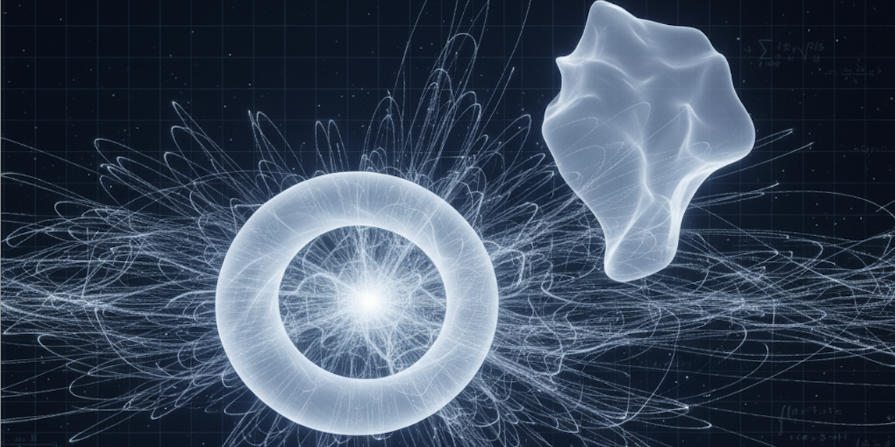

Università degli studi dell'Insubria



String theory replaces point particles with tiny vibrating strings, and is our best-developed candidate for a quantum theory of gravity. To be consistent, superstrings need ten spacetime dimensions; six of them are curled up into a small compact space, typically a Calabi–Yau manifold. The shape of this hidden space determines the physics we would observe in four dimensions.
One of the most surprising discoveries of the 1990s is that two geometrically different Calabi–Yau manifolds, X and its mirror X̂, can give exactly the same string physics. A computation that is very hard on one side (the "A-model", which counts holomorphic curves in X) becomes much easier on the other (the "B-model", which studies how the complex shape of X̂ varies, through its periods).
The first spectacular application (Candelas, de la Ossa, Green, Parkes, 1991) predicted the number of rational curves of every degree on the quintic threefold, an old problem of enumerative geometry, by solving a differential equation for the periods of the mirror. Mathematicians took years to confirm these numbers.
In 1994 Kontsevich proposed a deep explanation: mirror symmetry is an equivalence of categories. On one side, the derived category of coherent sheaves on X̂ (algebraic geometry, roughly "B-branes"); on the other, the Fukaya category of X (symplectic geometry, built from Lagrangian submanifolds, roughly "A-branes"). In physical terms, it says that the D-branes of the two mirror theories match.
When the mirror is not a manifold but a Landau–Ginzburg model, a space with a function W on it, the relevant objects become the Lefschetz thimbles of W, and periods become exponential integrals of the form ∫ eW/ℏ. These are exactly the objects I study for Feynman integrals: thimble decompositions, Stokes phenomena and wall-crossing appear here as the symplectic side of mirror symmetry. With collaborators, I am applying these ideas to construct thimbles for string amplitudes, starting from tree level and moving towards genus one.